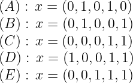

(30 points) We consider a fixed charge network flow problem where there are both incoming and outgoing arcs at a node D, as illustrated below.

The flow variables satisfy the fixed charge constraints 0
A fixed charge inequality is
| (1) |
where
Note: We have three choices for
-
(10 points) Show equation (1) is satisfied by all points in
T wheny 2 = 1, regardless of the choice ofC - andL - .Solution: We consider the three cases: In each case, the left hand side of (1) becomesx 2 wheny 2 = 1-
C - ={ 1} : Here, the right hand side of (1) is 2 +a 1 = 5≥ 2 +x 1 . So (1) is weaker thanx 2 - x 1 ≤ 2. -
L - ={ 1} : Here,λ = 7. Two subcases: (α )y 1 = 0: Thenx 1 = 0 so from the definition ofT we needx 2 ≤ 2, which is equivalent to (1) in this case. (β )y 1 = 1: then (1) becomesx 2 ≤ 2 + 7 = 9, which is weaker than defined inT . -
N - \ (C - ∪ L - ) ={ 1} : In this case, (1) becomesx 2 ≤ 2 +x 1 , as in the definition ofT .
Hence (1) is satisfied by all points in
T withy 2 = 1. -
-
(15 points) Show equation (1) is satisfied by all points in
T wheny 2 = 0, regardless of the choice ofC - andL - .Solution: Note thaty 2 = 0 impliesx 2 = 0, so the left hand side of (1) is (9- λ )+ . We consider the three cases:-
C - ={ 1} : Here,λ = 4 so the left hand side of (1) is 5. The right hand side of (1) is 2 +a 1 = 5 also, so (1) is satisfied.. -
L - ={ 1} : Here,λ = 7 so the left hand side of (1) is 2. The right hand side of (1) is 2 +λy 2 ≥ 2, so the equation is satisfied. -
N - \ (C - ∪ L - ) ={ 1} : In this case,λ = 7 so the left hand side of (1) is 2, and as in the previous case, the right hand side is at least as large.
Hence (1) is satisfied by all points in
T withy 2 = 0. -
-
(5 points) The point
x = (3, 5),y = (1, ) is in the LP relaxation of the feasible region. Show equation (1) is violated by this point, for two different choices ofC - andL - .Solution: Two cases:
Let
-
(10 points) Show the valid inequality
x 2 +x 4 +x 5 ≤ 2 has Chvatal-Gomory rank equal to one.Solution : We take the following nonnegative combination of the original constraints:giving the valid inequality
Rounding down the left hand side then rounding down the right hand side gives the valid inequality
x 2 +x 4 +x 5 ≤ 2, showing the inequality does indeed have C-G rank equal to 2. -
(10 points) Show that
x 2 +x 4 +x 5 ≤ 2 defines a facet of conv(S ).Solution : Note first that the knapsack polytope is full-dimensional.There are at least 2 methods to show the inequality defines a facet: using lifting, or finding 5 affinely independent feasible solutions on the face. We use the second approach.
The five points are:
We show these 5 vectors are linearly independent, placing them as columns of a matrix after permuting the components:
Subtracting the
x 2 row from thex 4 row, and then adding thex 4 row to thex 5 row gives an upper-triangular matrix with nonzeroes on the diagonal. Hence the 5 vectors are linearly independent, so they are affinely independent, so the constraint defines a facet ofS .
-
(10 points) Strengthen the valid inequality
x 1 +x 2 +x 5 ≤ 2 by lifting it.Solution : Lifting first onx 3 : We solveOptimal value is
ζ = 11 so lifting coefficient forx 3 isα = 2- ζ = 1.Now lifting on
x 4 : We solve
Optimal value is
ζ = 2 so lifting coefficient forx 4 isα = 2- ζ = 0.Hence we obtain a lifted inequality of
x 1 +x 2 +x 3 +x 5 ≤ 2.Note that even if we lift in the opposite order, we obtain the same inequality.
Consider the
-
(5 points) Show from first principles that the maximum number of edges in any cut is 6.
Solution :If all 5 vertices are on the same side of the cut then 0 edges are in the cut.
If 4 vertices are on 1 side and the last vertex on the other side, then the cut contains 4 edges. If 3 vertices are on 1 side and 2 on the other, then 6 edges are in the cut.
-
(10 points) It follows from part 3a that the constraint
∑ e ∈ E x e ≤ 6 is valid for theMaxCut problem onK 5 . How would you try to show that this constraint gives a facet of the convex hull of cuts? (Note: I do not want you to show that it is a facet; instead, I want you to tell me what points you might consider, and what you might try to do with those points.)Solution :It was proved in class that the convex hull of the
MaxCut polytope is full-dimensional.K 5 has 10 edges, so the dimension of the convex hull is 10.Thus, to prove our inequality is a facet, we need to find 10 affinely independent points that satisfy the constraint at equality.
There are 10 ways to put three vertices on one side of the cut and 2 on the other, so the incidence vectors of these cuts give the candidate points.
(25 points; each part is worth 5 points) For each of the following statements, determine
whether it is
-
If
G = (V,E ) is a perfect graph then its complement graph is also perfect.Solution :TRUE: This is a result from the notes.
-
Let
G = (V,E ) be a graph. If the maximum cardinality node packing onG has the same size as the minimum cardinality clique cover onG thenG is a perfect graph.Solution :FALSE: need the equality to also hold for every subgraph of
G . -
The node-arc incidence matrix of an undirected graph is totally unimodular.
Solution :FALSE: It’s true for bipartite graphs and for directed graphs. It’s not true for odd cycles; eg, the 3-cycle gives a node-arc incidence matrix of determinant 2 or -2 (the sign depends on the ordering of the columns).
-
Assume
x ∈ ℝ + n satisfies the inequalitiesg T x ≥ 1 andh T x ≥ 1. Thenx also satisfies∑ j =1 n max{ g j ,h j } x j ≥ 1.Solution :TRUE: This is a result from the notes.
-
Assume the nonnegative integer vector
x satisfiesx 1 + 0. 7x 2 + 0. 2x 3 = 5. 4. Thenx also satisfies 0. 2x 2 + 0. 2x 3 ≥ 0. 4.Solution :TRUE: this is the strong Gomory cut from the original constraint.
Alternatively, the constraint is equivalent for
x 2 +x 3 ≥ 2. If we look at the three nonnegative integers choices ofx 1 andx 2 that violate this constraint, it is easy to see that none of them lead to an integer solution to the original equation.